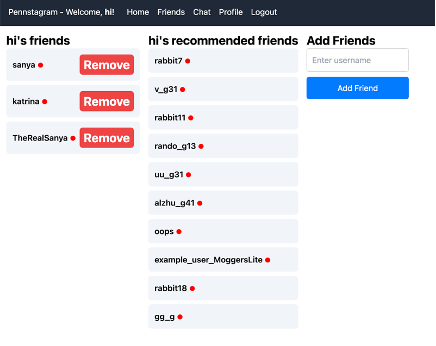

MedConnect
Project Overview
MedConnect is a platform I created for the Techology Student Association WebMaster Competition. MedConnect is a telemedicine services platform that allow people to get on demand access to medical services. This website highlights the many services including TextConnect, a live chat with a medical professional, and VideoConnect, a live video chat service. The website also serves as a resource for patients to learn about medical conditions
Images

Project Skills
- HTML
- CSS
- JavaScript
Project Details
Features Implemented
Feed - Basic Functionality
The feed page, which is also the user’s homepage, allows the user to 1) create new posts, 2) view relevant posts, and 3) search for related posts using natural language (see section LLM). On the backend side, there are several tables in our Amazon RDS database that interact with the feed: users, posts, hashtags, likes, comments, post_hashtags, and comment_hashtags. These tables were created and maintained using SQL queries both in our create_tables.js and our routes.js file. When fetching posts to load the feed, the backend route getFeed uses a SQL query with multiple joins and unions to fetch posts that are created by the current user logged in, friends of the current user, and posts that contain hashtags that are in the current user’s profile. For each post, there are also queries to fetch the associated likes, comments, and hashtags using helper functions. Pagination is implemented for post fetching by setting a limit for the number of posts to be fetched during one getFeed call, and then subsequent calls will start fetching new posts with an offset determining where to start fetching from depending on the requested page from the frontend. The likes and comments tables are linked to the posts table through foreign key constraints on the post_id. Similarly, post_hashtags and comment_hashtags connect posts and comments with their associated hashtags through foreign key constraints on post_id and comment_id, respectively. Each post can contain a title, text content, and/or an image. Images are uploaded to an Amazon S3 bucket, and temporary signed URLs are generated so that the images can be viewed in our application. When a user creates a new post, the feed is refreshed to show the changes. Users can also comment with optional hashtags on their own posts and each other's posts, as well as reply to each other’s comments. We utilized a tree structure for comments in order to handle nested replies. Each post is also indexed into ChromaDB for the search feature (see section LLM) and pushed to Kafka through the producer (see Feed - Twitter and Federated Posts).
Feed - Ranking Algorithm
The feed page consists of posts that are ranked personalized to each user. In order to do this, we created a SparkJob that runs on Livy. This job first computes a graph based on users, friends, posts, and hashtags. Then, we run the adsorption algorithm in order to determine labels for each user and assign propagated weights for 15 iterations. Using the labels, we then do a random walk for every post for each user which ranks the posts by computing the probability distribution that a post was accessed from the user. The job returns a Map of a user and an RDD to each post ID and a ranking value. Then, the values are written to the user_post_rankings table. Using this information, we then order the post by highest ranking. Using a cron job, these rankings are computed every hour so the feed is refreshed.
Feed - Twitter and Federated Posts
We created two Kafka consumers, one for Twitter news and another for federated posts. Two different jobs are scheduled (using node_schedule) to run at the first minute of each hour to fetch Twitter news and federated posts respectively.
The job for Twitter news adds all the posts consumed to the database table posts, associating each post with a dummy user “kafka-twitter”. It also processes the hashtags specified in the hashtag field and updates our database accordingly. Finally, it indexes the news content into ChromaDB.
Similarly, the job for federated posts adds all the posts consumed to the database table posts. It tries to find if the user that made the post already exists in our system and associates the post to them. If the user doesn’t already exist, it will create a new user with a username
Profile
Users can create their account by entering a username, password, some hashtags they are interested in, and upload a profile picture. When a photo is uploaded, a route in the backend will be called to get the top 5 actors that are the most similar to the photo. When the form is submitted, all this information will be stored in the users table. The hashtag table will also be updated accordingly. Users can update their profile when they are logged in. Changes will be reflected in the database. When they change the actor they are impersonating, a status post will be added to the post table.
Friends
The friends page allows users to see a list of all of their current friends. The tables on our RDS that we use for this section are friends and recommendations. This was done through the getFriends route. Next to each friend’s username is a red dot indicating that they are not online or a green dot indicating that they are currently online. This is done by checking the session ID of the friend. There is also a button that allows users to remove a friend and that friend connection will be removed from the friends table. Removing a friend will also remove their posts from the feed (unless they are recommended posts). Additionally, it will show the friend recommendations with a button that allows users to add them as friends. These recommendations are refreshed every hour. In order to compute the recommendations, we developed an algorithm similar to homework 3 where we recommend friends of friends and users with a high SocialRank. We adjusted these tables from previous homeworks to hold user ids. We also implemented friend requests for extra credit. Users can search up any valid username of an existing user and request to friend them. On the friends page, users can also see their friend requests and once accepted will be added to the friends list.

Chat
The chat page allows users to chat with their friends using websocket.io. The tables on our RDS that we use for this section are messages, chat_sessions, and chat_participants. The messages table is used to store previous time-stamped messages in the same chat session id (chat_id), the chat_sessions table is used to store the unique id for each individual chat session, and it auto increments for each new unique chat session between a unique set of users. The chat_participants table is used to store the users in each of the unique chat sessions (chat_id). For each user, the chat page displays all the chats the user is currently in, with the unique chat id and the different participants for each of the chats. Within the chat page, there is a feature at the top to request to add a friend to the chat, and will report an error if the person is not found, not a friend, themself, not online, or already in the existing chat. If the friend is online, they will receive a pop up that states that someone has asked them to join the chat. The friend can then accept or decline the request. When they accept the request, a chat pop up will show up where the users can talk. If a chat has already been created between the same set of users, then the chat box will display all the persistent previous messages that were written by the users, with the light blue bubbles indicating that it was written by the user themselves and the gray bubbles indicating it was written by other people. The messages in the chat history will be ordered by timestamp for all the users in that chat. Any user in the existing chat can then add extra people into the chat for the group chat feature. The person invited to the group chat can also accept or decline the pop up invitation. If they decline, the chat will stay the same but if they accept, a group chat will be created between the existing users in the chat and the new user. If the group chat has already been created before, then all the people in the group chat will be able to see the persistent previous messages in the group chat, ordered by timestamp. If a new invite results in a chat session involving the same user group as an existing chat session, the invite will not be allowed. Furthermore, if someone is already in the group chat, they cannot be added again. If anyone wants to leave, there is a button called “Leave Chat” that the user can press to leave this particular chat. Then, the chat will revert back to the chat history of the set of users still remaining in the group. If the user stays in that chat and logs out or leaves the chat page, the user will still be able to access the previous messages in the chat when they return to the chat page.
RAG & LLM
InstaLite leverages Retrieval-Augmented Generation (RAG) with GPT to enhance search functionality. All posts are indexed in ChromaDB, and the system uses a combination of embeddings and GPT to provide contextually accurate search results. All our posts are indexed into ChromaDB when they are added to our database. We use the "text-embedding-3-small" model to generate embeddings for the contents of the posts, then add them to ChromaDB. When a user uses the search feature, it calls a route in our backend which uses RAG with GPT to provide an answer. The way RAG is implemented in our application is by supplying a context along with the prompt. The information in the context is supplied by ChromaDB.
Infinite Scrolling
To implement infinite scrolling, the backend getFeed route’s handling for pagination was sufficient, so all changes were made in the frontend React code. The functionality was achieved using React hooks (i.e. useEffect, useState, etc.) and the debounce function from the lodash library. We refactored our fetchData function to be triggered conditionally based on the current user’s scroll position on the page. Using useState, a page state was created that incremented whenever the user reached the bottom of the webpage, which was detected using a scroll event listener. The debounce function is used to limit the rate at which the handleScroll function is called, which sets the page state. If the page is updated, then the fetchData function is called and fetches the next set of posts from the server if there are more posts to be fetched. The response is then appended to the existing posts. To highlight this functionality, we added a loading progress component from the Material UI Component library, which shows a loading progress circle at the bottom of the page while the feed is being fetched.